JaCoya Thompson

JaCoya is a PhD student in the Department of Computer Science at Northwestern University. She graduated from Fayetteville State University (FSU) with a Bachelors of Science degree in Computer Science with a minor in Mathematics and a Masters of Science degree in Mathematics. She’s currently building and using current technologies that allow 6-12th grade students to create, learn, and engage with data science. Her area of interest includes using technologies to improve and enhance methods of instruction and investigating instructional strategies that promote equal access to individuals from culturally diverse populations.
website
Michael Smith

Michael Smith is a Computer Science and Learning Sciences PhD student at Northwestern University, and a National GEM Consortium PhD Fellow. Some of his research and project interests include exploring the intersections of technology & education, formal and informal learning, computing culture, new media and community, and games.
website
Natalie Melo

Coming from Malden, MA, Natalie is a Ph.D. student in Computer Science and
Learning Sciences. She graduated with a Computer Science degree from the University of Pennsylvania as both a Questbridge Match Scholar and Janey Scholar. Natalie has a passion for empowering students. Her interests lie in identity, collaboration, and belonging.
Sarah Lee

Sarah is from West Rogers Park, Chicago. She is a PhD student in Learning Sciences. She is currently interested in the microacts of teaching, learning, and identity development through hands-on making and in intergenerational communities.
website
Stephanie Jones
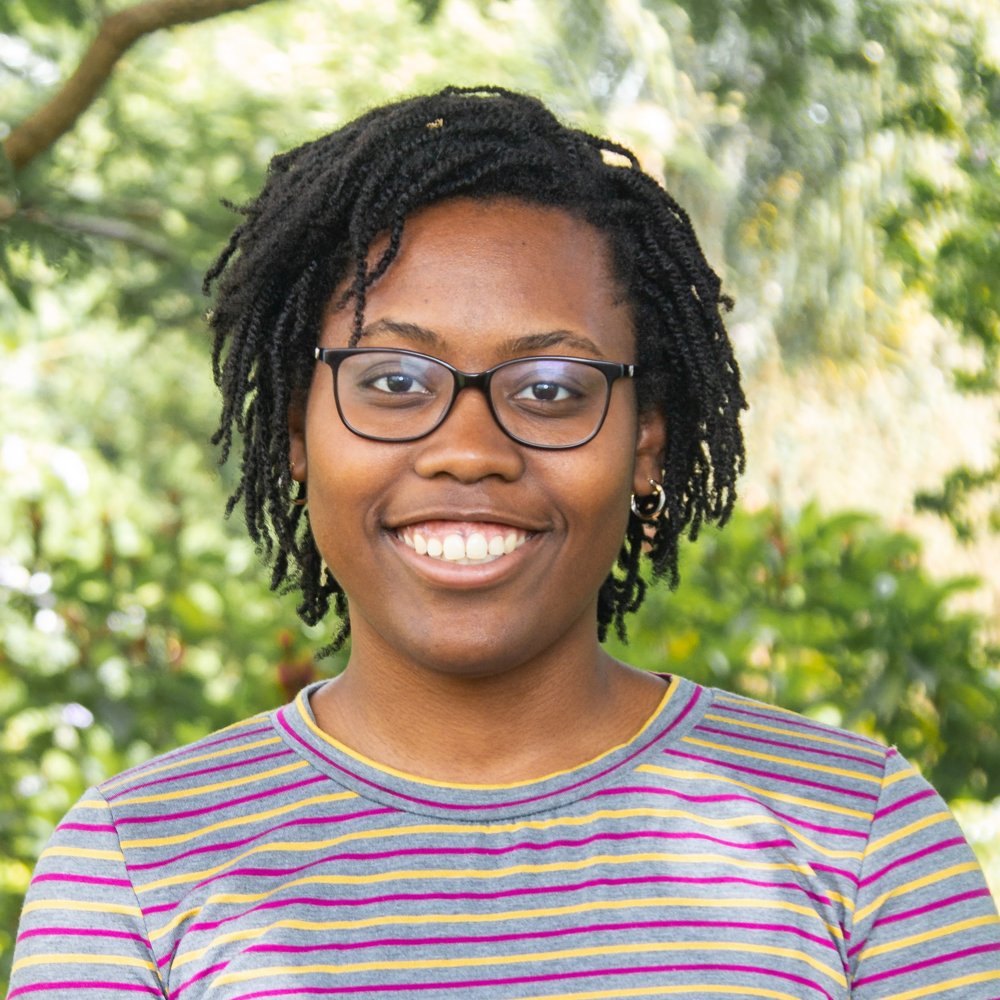
Stephanie is a Ph.D. Student in Computer Science and Learning Science from the Philadelphia area. She's a graduate of Villanova University where she studied Computer and Electrical Engineering. She is interested in increasing access to STEM for underrepresented youth through informal learning opportunities. She is additionally interested in the intersections of socio-cultural theories, constructionism, and multi modal analytics. When not doing research she can be found laughing at her own jokes, watching YouTube, or using Slack reacts.
website
Khalil Anderson

Born in Bronxville, New York and raised in Ellicott City, Maryland, Khalil, a UMBC Alum, is a Computer
Science PhD student with interests in Machine Learning. More specifically with interests in Reinforcement
Learning, NLP, and how Machine Learning can help augment, not necesarily replace, humans in task and jobs
such as driving, learning, manufacturing, and any other area.
website
Herminio Bodon
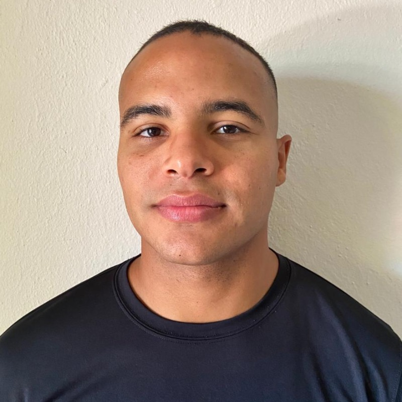
I am a PhD student in Computer Science and Communication Studies at Northwestern University. My research focuses on understanding learning in sports spaces and designing technologies and experiences that support sports performance and learning.
website
Adia Wallace
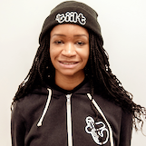
I am a student in the Joint PhD program in Computer Science and Learning Sciences at Northwestern University. I am originally from Jackson, Mississippi and lived in Boston, Massachusetts for several years. The opportunity to do both computer science and learning sciences is what brought me to Northwestern. I was first introduced to computer science as a 2nd-year college student at Xavier University of Louisiana, a historically-Black university in New Orleans, Louisiana. After a master’s degree and years in STEM/ Computer Science educational outreach, I found my way into the classroom. I spent a few transformative years as a CS teacher before getting back into academia. Now, I want to work to address some of the key problems that surfaced while engaging in those spaces.
website
Ashley Quiterio
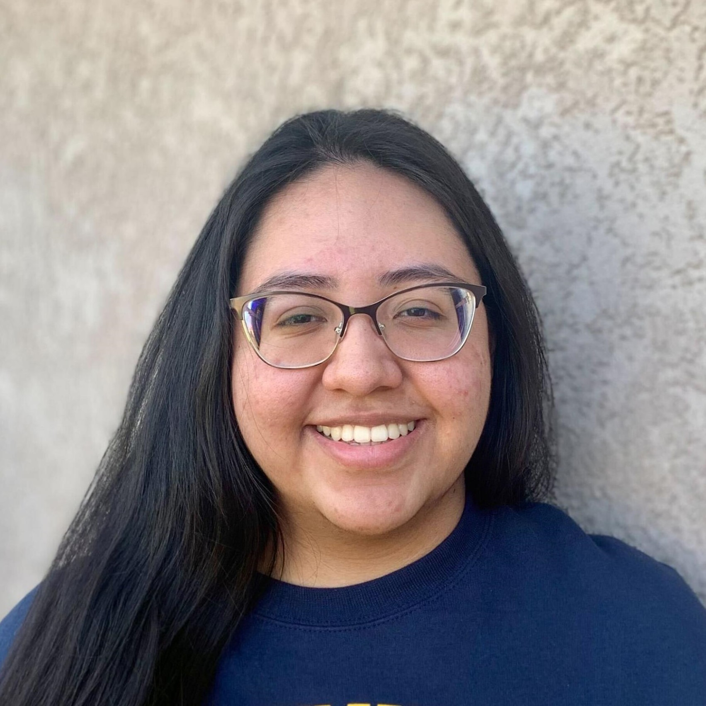
Ashley is a Learning Sciences PhD student at Northwestern University. Originally from California, she graduated from UC Berkeley with a degree in Data Science. Their research interests include data science education, storytelling, identity, and ethics.
Tochukwu Eze
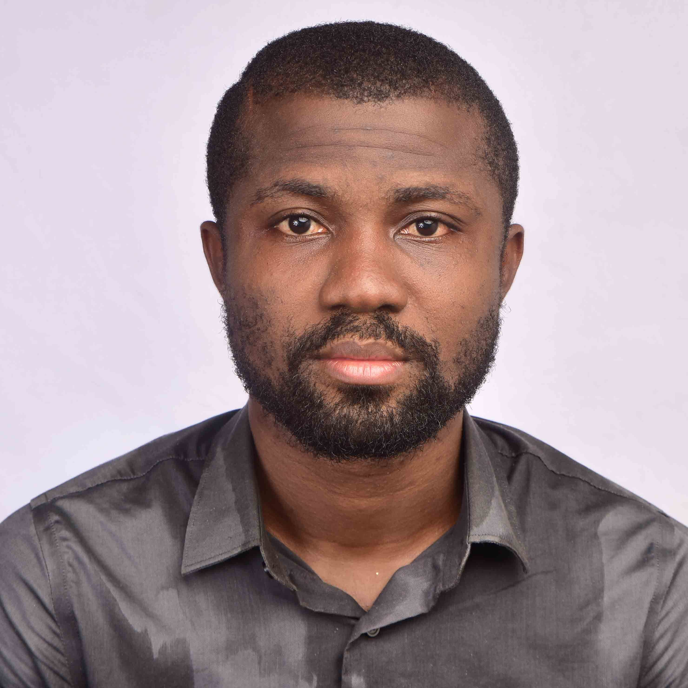
Tochukwu Eze is from Enugu, Nigeria. He is a PhD student in Computer Science at Northwestern University and His interest lies at the intersection of System design and Learning Science. His current research is focused on Collaboration Literacy, Multi-modal Learning Analytics and building systems for collaborative learning and skill acquisition.
Victoria Chavez
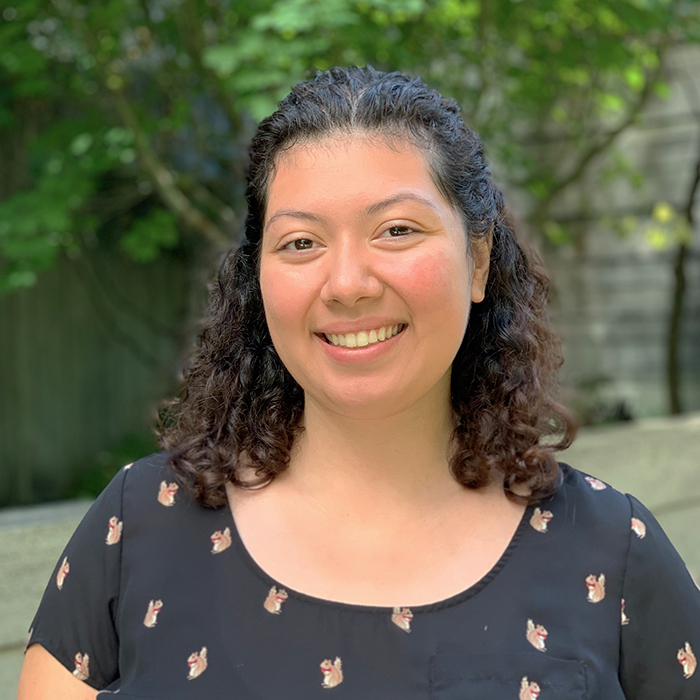
Victoria (they/she) is a Chicago-born and raised Chapine (Guatemalan) educator, scholar, and engineer. Currently, they’re a Joint PhD student in the Computer Science + Learning Sciences Program at Northwestern University. Victoria’s research interests stem from asking "How can we make computer science a safe and joyous experience for Black, Disabled, Indigenous, and Latine/x college students?". They are also interested in issues of accessibility, civic tech, equity, and social justice.
website
Meg Butler
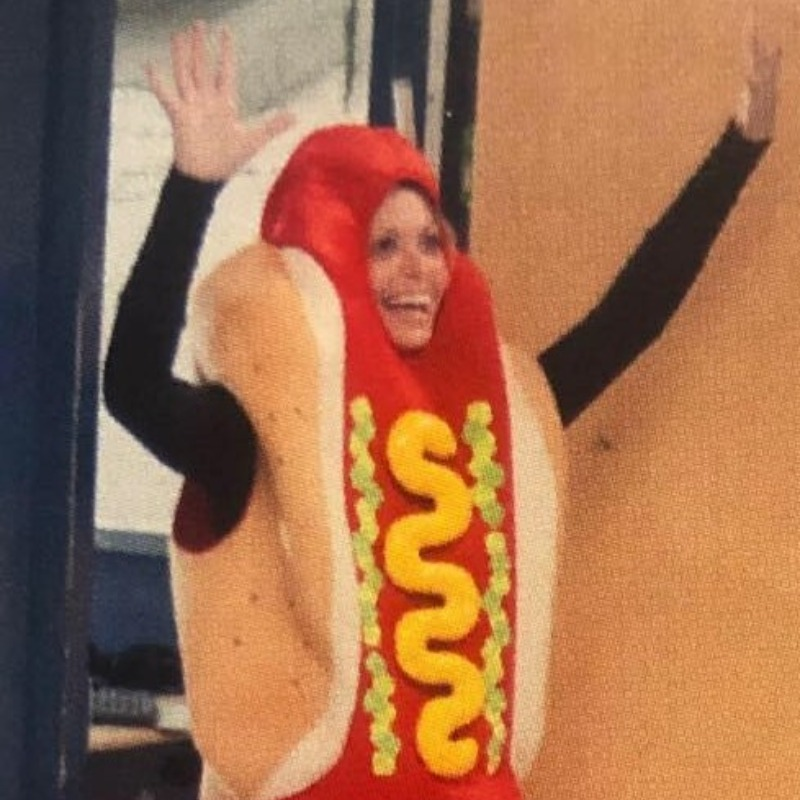
As a disabled researcher and educator, Meg is particularly interested in educational dignity. Her work seeks to challenge the deficit-based views of human learning that are complicit in the reification of normatively powered dynamics and push beyond the practices that maintain and enact ableism to a dynamic coexistence of multiple ways of seeing and knowing. She enjoys riding her bike, hanging out with animals, and eating Albanese gummy bears.
Aziza Mirsaidova
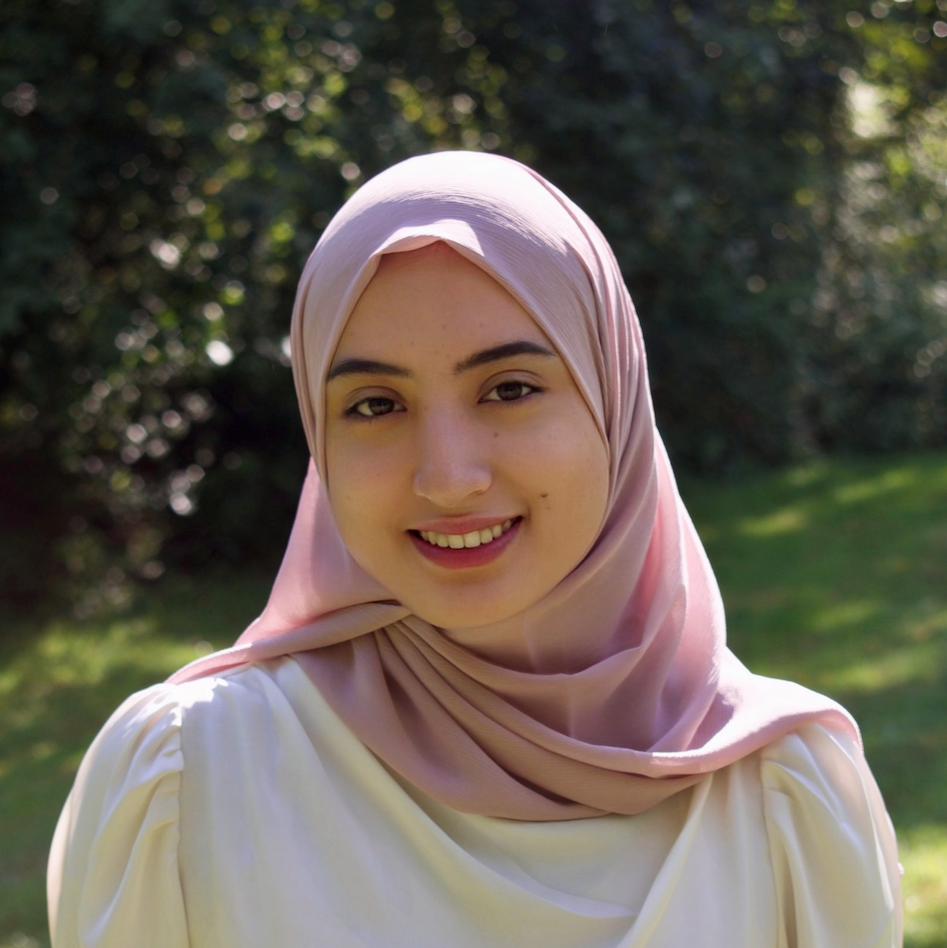
Originally from Uzbekistan, Aziza is a first-year Master’s student in Artificial Intelligence at Mccormick. She is interested in learning and researching computational approaches that enable computers to understand human language and break down communication barriers between people and language technologies. In particular, she is exploring areas such as Deep Learning, NLProc and Understanding, and Model Interpretability. At Tiilt, she is contributing to the Blinc team. Outside of academics, she is an epee fencer, and a language learner (currently Arabic).
Yamini Ulaganathan
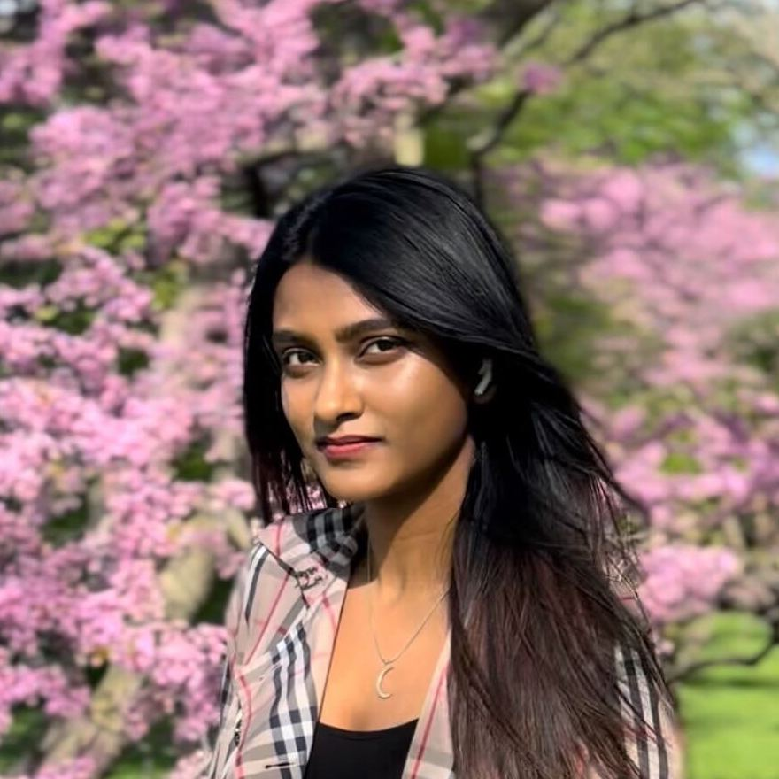
Yamini is a Master’s student studying Computer Science. She is passionate about using computer science for social good, with particular interest in the intersection of sports technology, AI in fashion and technology for equity and inclusion. In her free time, she models, runs, plays her electric guitar, and chills at the beach. She’s a member of the SportSense team, where she focuses on artistic data visualization and interaction.
Vedant Apte
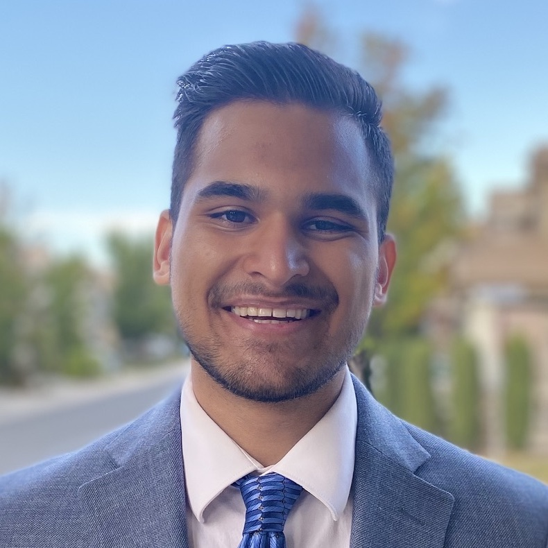
Vedant is a Master's student studying Computer Science. He is interested in artificial intelligence, specifically natural language processing, and its applications in practical domains. As an Independent Study Researcher in the TIILT Lab, Vedant is focusing on applying sentiment analysis and topic modeling to large sets of user data, in order to identify and analyze trends in this data. In his free time, he enjoys engaging in various different sports such as soccer and football, working out, and exploring the city of Chicago.
Afreen Bhumgara
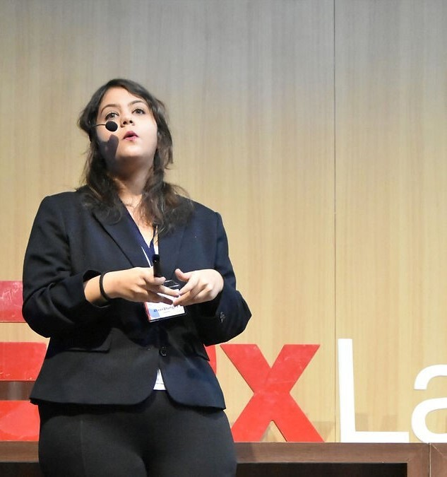
Afreen’s research interests include studying how diverse individuals learn in complex environments, using human-technology interaction to build inclusive learning experiences for students that facilitate creative education, designing human-centered software, and multimodal analytics. On campus, she is a Teaching Assistant for CS classes and is involved in Data Economics research at the IDEAL Research Institute. In her personal time, Afreen enjoys growing herbs and micro greens, playing chess, making art, and increasing access to STEM education for marginalized communities.